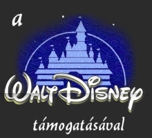
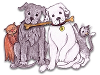
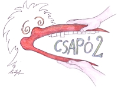

Mesés gyerekszoba
Karácsonyi mese a gyerekeknek, eredeti Gólya-grafikával. Igaz történet a barátságról, és a szeretet ünnepéről.

Kutyajó karácsony
Karácsonyi mese a gyerekeknek, eredeti Gólya-grafikával. Igaz történet a barátságról, és a szeretet ünnepéről.

Gólya-csapó
Íme egy kis EXTRA! A Gólyaműhely korai grafikus tervei:
A kezdő animáció elejére egy amolyan filmes csapó csőrből!